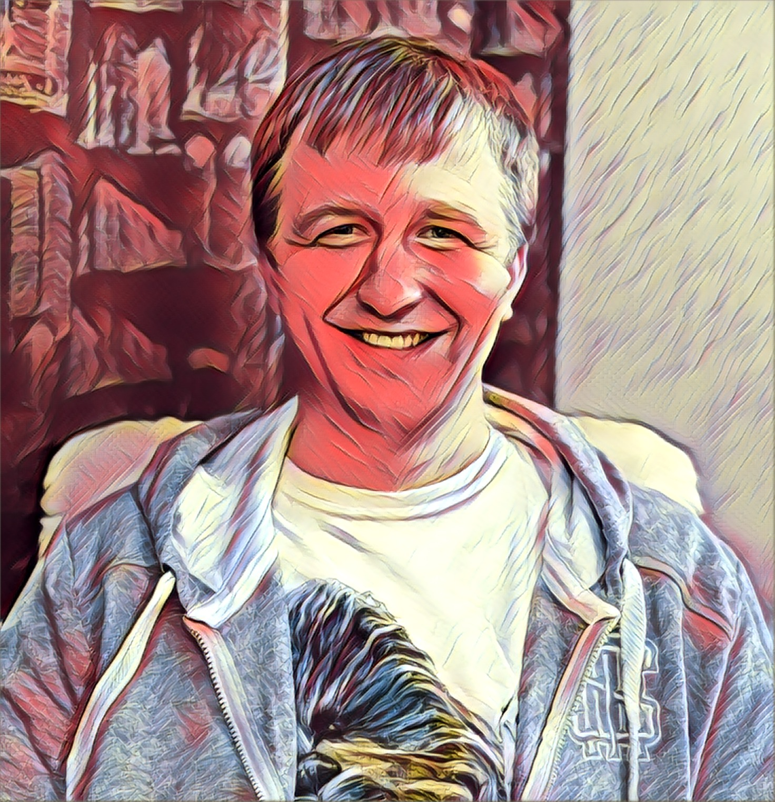

Привет, я Клим Junior Front-end разработчик, верстальщик HTML5, CSS3
Занимаюсь изучением языков HTML5, CSS3, JavaScript c марта 2019г. Использую такие платформы как Html Academy, learn.javascript, MDN Web Docs, ruseller.com и codewars. Эта профессия мне очень близка, в ней я вижу будущее и не только свое.
Ключевые навыки:
- HTML5
- CSS3
- JavaScript
- Английский — B1 — Pre-Intermediate
Курсы:
- 2019 - Html Academy: JavaScript уровень 1
Образование:
- 2007 - Дальневосточное мореходное училище: техник-механик по обслуживанию судовых дизелей
- 2025 - Российская академия народного хозяйства и государственной службы при Президенте РФ (РАНХиГС) заочно: правовое обеспечение национальной безопасности
Места предыдущей работы:
- Октябрь 2007 – июль 2008 г. ООО «Кронверк» в должности судового механика
- Октябрь 2010 – май 2017 г. АО «МЭЗОПЛАСТ» в должности слесаря-ремонтника
- Июнь 2017 – н.в. ООО «ТракМастер42» в должности автослесаря
Личные качества: коммуникабельный, аналитический склад ума, нравится работать в команде, обязательный и ответственный, хочу и умею обучаться.
Мой статус
If you fall asleep now, you will dream. If you study now, you will live your dream
Контакты для связи
Воробьев Клим Дмитриевич
email: kd.vorobyev88@gmail.com
телефон: +7(926) 842-84-92